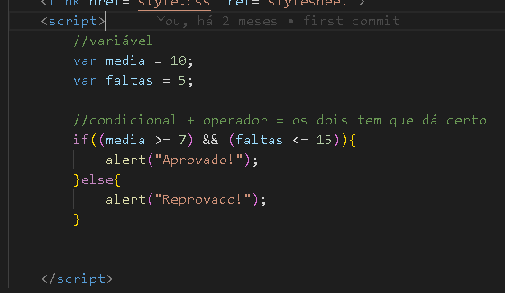
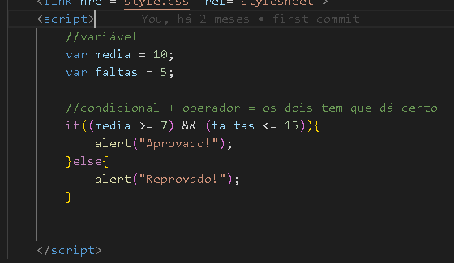

Operadores "E" ( && )
Muito usado junto com o condicional "if", para fazer comparações entre as informações.
O "if" é usado para verificar, algo aconteceu entao fará tal coisa se não faz outra coisa.
Operador Lógico E " && ", dá mais opções para fazer essa verificação,
você pode fazer várias verificações.
Como no exemplo que vamos exibir:
Que é pegar as notas e as faltas do aluno, fazer uma verificação e de acordo com as notas e faltas,
avisar se o aluno passou ou não.
Vamos para o código:
Abra a tag "script", dentro dela adicione as variáveis,
var media = 10; a variável "media" vai receber "10".
var faltas = 5; a variável "faltas" vai receber "5".
Agora faremos o "if" com o operador lógico "E":
if ( ( media >= 7 ) && ( faltas *= 15 ) ) * é o sinal de menor* {
____alert("Aprovado!");
}else {
____alert("Reprovado!");
}
Fecha a tag "/script"
Veja como é o código:

No exemplo, a condição para ser aprovado é :
"media for maior ou igual a 7" && "faltas for menor ou igual a 15"
Atenção: Para ser aprovado tem que está dentro das duas condições "media e faltas".
Se der outro resultado diferente, será reprovado.
Agora veja como seria, clicando no botão abaixo:
Abra a tag "script", dentro dela adicione as variáveis,
var media = 10; a variável "media" vai receber "10".
var faltas = 5; a variável "faltas" vai receber "5".
Agora faremos o "if" com o operador lógico "E":
if ( ( media >= 7 ) && ( faltas *= 15 ) ) * é o sinal de menor* {
____alert("Aprovado!");
}else {
____alert("Reprovado!");
}
Fecha a tag "/script"
Veja como é o código:

No exemplo, a condição para ser aprovado é :
"media for maior ou igual a 7" && "faltas for menor ou igual a 15"
Atenção: Para ser aprovado tem que está dentro das duas condições "media e faltas".
Se der outro resultado diferente, será reprovado.
Agora veja como seria, clicando no botão abaixo: